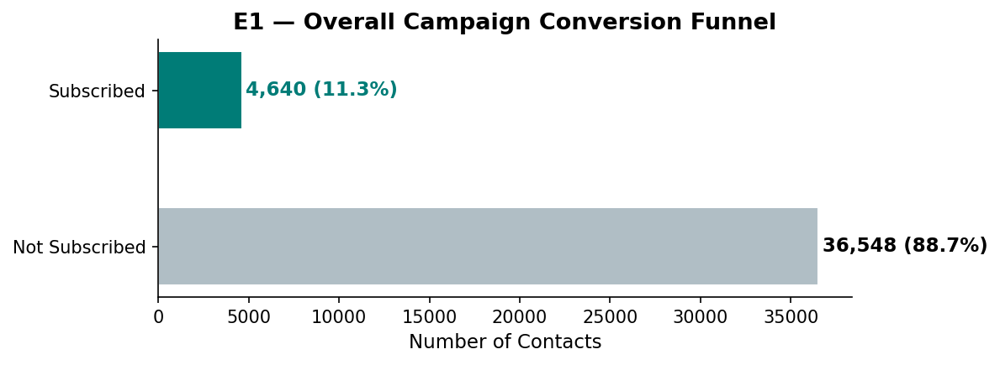
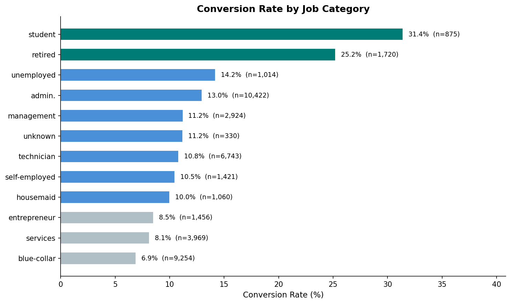
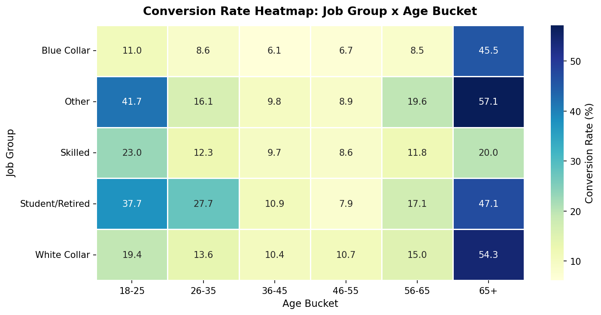
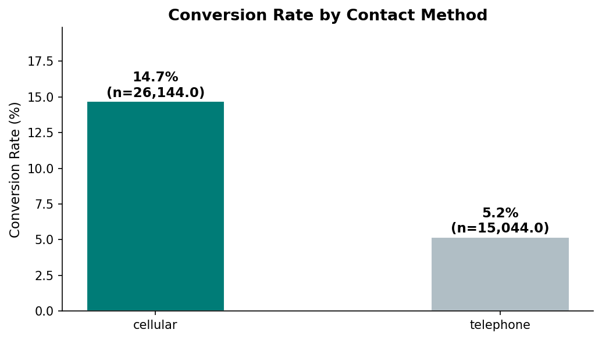
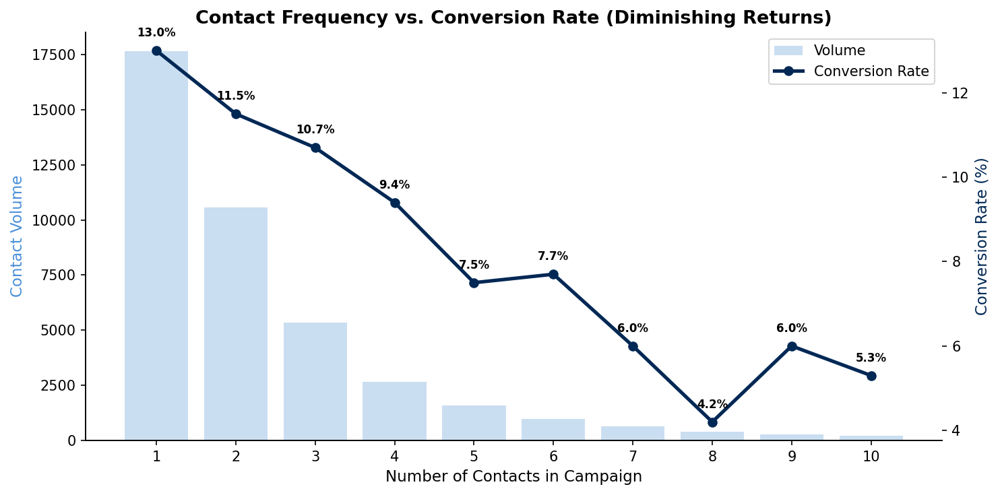
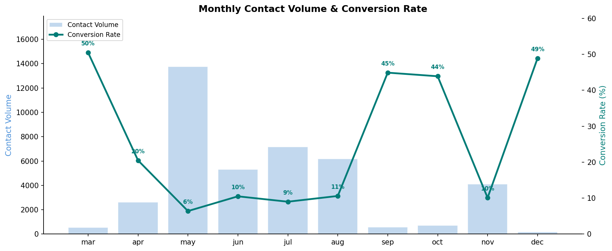
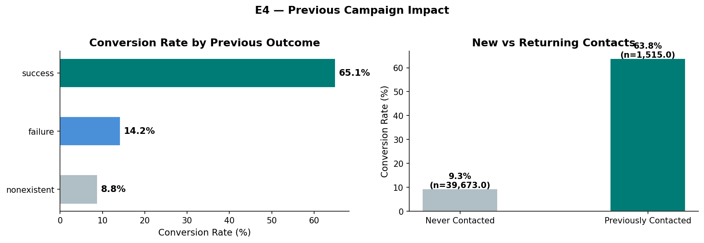
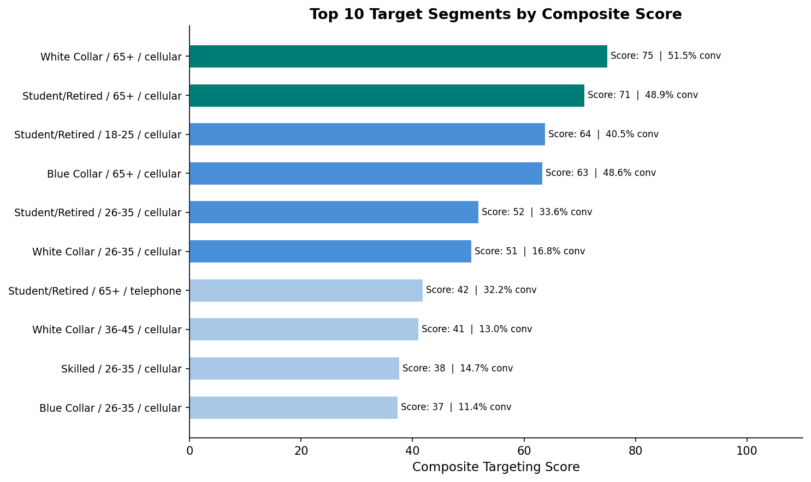

A Portuguese bank ran a direct marketing campaign to sell term deposits between 2008 and 2010, contacting 41,188 customers by phone. The overall subscription rate was just 11.3% — meaning nearly 9 out of 10 calls failed to convert.
But conversion was far from uniform. Students converted at 31.4%, retirees at 25.2%, and customers with prior campaign success at 65.1%. Meanwhile, the bulk of contacts went to moderate-yield working-age professionals converting at single digits. The data points to a clear conclusion: the campaign was optimized for reach, not precision.
Of the 41,188 customers contacted by phone, just 4,640 subscribed to a term deposit — an overall conversion rate of 11.3%. This baseline is the anchor for every comparison that follows. But averages obscure the real story: segment-level conversion rates range from 5% to over 30%, a 6x spread that reveals significant untapped targeting potential.

The campaign contacted over 41,000 customers, but the conversion rate tells us most of the effort was spent on low-yield profiles — the highest-converting segments are small and under-targeted.
When we break conversion by job category, two segments dominate: students at 31.4% and retired customers at 25.2%. These rates are 2–3× the 11.3% baseline. At the other end, blue-collar workers (7.1%) and services (8.5%) consistently underperform. The pattern sharpens when we cross-tabulate job group with age: the highest-converting cells cluster at the demographic extremes.


Conversion follows a U-shaped age curve — highest at the demographic extremes (18–25 and 65+) and lowest in the 36–55 working-age middle where financial commitments compete with term deposit offers.
Two controllable factors stand out. First, contact method: cellular converts at 14.7% versus telephone at 5.2%, a 9.5 percentage point advantage that holds across nearly all customer segments. Second, contact frequency: conversion peaks on the first attempt (11.1%) and decays with each subsequent call — by the third contact, it's already below 8%. Beyond three, the yield drops below 6%.


Monthly timing also matters. Conversion peaks in March (50.6%), December (48.9%), September (44.9%), and October (43.9%) — months when volume is lower but yield is dramatically higher. The high-volume months (May–August) show the lowest conversion rates, suggesting campaign intensity dilutes effectiveness.

The data supports two clear operational rules: lead with cellular, and stop at three contacts. Together, these two levers could meaningfully improve conversion yield without any change to the customer targeting model.
Of the 1,373 customers whose previous campaign was successful, 65.1% subscribed again — a conversion rate 7.4 times the overall baseline. This makes prior campaign success the single most powerful predictor in the dataset, far exceeding any demographic or contact-method signal. Even customers whose previous campaign resulted in failure convert at 11.2%, essentially matching the baseline.

The catch: 96.3% of customers in this campaign have no prior contact history at all (poutcome = 'nonexistent'). The bank's re-engagement pool is essentially untapped. Building a systematic follow-up pipeline for past subscribers could yield disproportionate returns with minimal incremental effort.
Prior success customers are the bank's most valuable re-engagement asset. At 65.1% conversion, they are 7.4× more likely to subscribe than the average prospect — yet they represent only 3.3% of the contact list.
Combining the evidence from Sections 01–04, we can distill the optimal strategy into three operational rules. First, prioritize high-conversion segments (students, retirees, prior successes) over blanket outreach. Second, route all priority contacts through cellular. Third, cap campaign contacts at 3 per customer — beyond this, the marginal conversion is not worth the cost.

| Priority | Segment | Conversion | Action |
|---|---|---|---|
| 1 | Prior success customers | 65.1% | Re-engage first via cellular — highest ROI |
| 2 | Students (18–25, cellular) | 31.4% | Target during academic calendar peaks |
| 3 | Retired (65+, cellular) | 25.2% | Stable segment — consistent year-round yield |
| 4 | White collar (cellular, ≤3 contacts) | 10–12% | Largest volume segment — strict 3-contact cap |
| 5 | All other segments | 5–8% | De-prioritize — reallocate budget to tiers 1–3 |
The data makes the case for precision over volume. Concentrating effort on the top 3 priority segments — prior successes, students, and retirees — could more than double the effective conversion rate while reducing total contact volume.
▶ Data Notes & Methodology (click to expand)